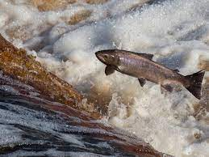

Overview
The Atlantic Salmon is an anadromous fish species that spends the early part of its life in freshwater rivers and streams before migrating to the ocean for most of its adult life.
Known for its silvery body and distinctive black spots, the Atlantic Salmon is a symbol of both recreational fishing and ecological balance.
.jpeg)
Habitat
Atlantic Salmon are primarily found in the cold, clean waters of the North Atlantic. They spawn in freshwater and then migrate to the ocean, covering long distances during their oceanic phase.
These fish are adaptable and can be found in a variety of habitats, from fast-flowing rivers to deep ocean waters.
.jpeg)
Behavior
One fascinating behavior of Atlantic Salmon is their incredible homing instinct. After spending years in the ocean, they navigate back to their natal rivers to spawn.
They are also known for their impressive leaps, jumping up waterfalls and obstacles during their upstream migration.
Gallery
{kind=link}
World Count
| Region | Population |
|---|---|
| North Atlantic | Estimated 1 million |
| Baltic Sea | Estimated 200,000 |